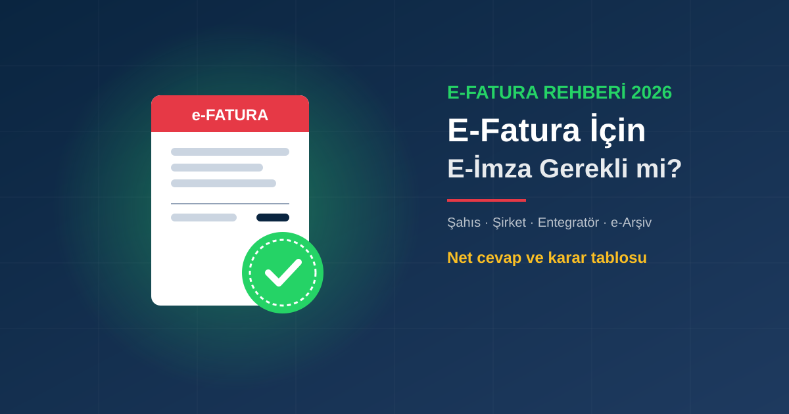

Kısa Cevap: Hangi Yöntemi Kullandığınıza Bağlı
"E-fatura için e-imza gerekli mi?" sorusunun cevabı, faturayı nereden kestiğinize ve şirket türünüze göre değişir. Elektronik faturanın kendisi elektronik olarak imzalanır ya da mühürlenir; bu işi kimin, hangi araçla yaptığı farklıdır:
| Durumunuz | Fatura imzası | Size ne gerekir? |
|---|---|---|
| Şahıs şirketi, GİB e-Fatura Portalı | Sizin imzanız | Nitelikli e-imza veya mali mühür |
| Limited / anonim şirket, GİB e-Fatura Portalı | Şirket mührü | Mali mühür |
| Özel entegratör kullanan her mükellef | Çoğunlukla entegratör | Fatura için kart gerekmeyebilir; başvuru ve diğer işlemler için e-imza sık gerekir |
| GİB e-Arşiv Portal (ücretsiz) | Portal onayı | SMS onayı; e-imza zorunlu değil |
Hangi mükelleflerin e-faturaya geçmek zorunda olduğunu E-Fatura Geçiş Zorunluluğu 2026 yazımızda ayrıntılı anlattık. Bu yazı yalnızca "imza tarafında neye ihtiyacım var?" sorusuna odaklanıyor.
Şahıs Şirketi: E-İmza mı, Mali Mühür mü?
Şahıs şirketi sahibi hukuken gerçek kişidir. Bu yüzden GİB e-Fatura Portalı'nda faturalarını kendi nitelikli elektronik imzası (NES) ile imzalayabilir; isterse mali mühür de alabilir. Pratikte çoğu şahıs şirketi için e-imza daha mantıklıdır, çünkü aynı kart:
- e-Devlet'e şifresiz giriş,
- SGK, UYAP, EKAP ve MERSİS işlemleri,
- sözleşme ve resmi yazışmaların imzalanması
için de kullanılır. Mali mühür ise yalnızca vergi ve e-belge işlemlerine yöneliktir. İki aracın farkını Mali Mühür Nedir? E-İmza ile Farkı yazımızda karşılaştırdık.
Limited ve Anonim Şirket: Mali Mühür Şart
Tüzel kişiler (limited, anonim, kooperatif vb.) GİB e-Fatura Portalı'nda faturalarını mali mühür ile imzalar; şirket adına kişisel e-imza bu işin yerine geçmez. Ancak şirket yetkilisinin kişisel e-imzası yine de gerekir: MERSİS, ticaret sicili, SGK işveren işlemleri, KEP ve EKAP gibi birçok işlem yetkilinin kendi e-imzasıyla yapılır. Bu yüzden tipik bir şirkette hem mali mühür hem yetkili e-imzası bulunur.
Özel Entegratör Kullanıyorsanız
Faturalarını bir özel entegratör yazılımıyla kesen mükelleflerde imzalama çoğunlukla entegratörün altyapısında yapılır; bu durumda her fatura için kartınızı takmanız gerekmez. Yine de:
- Entegratör sözleşmesi, başvuru ve yetkilendirme adımlarında,
- GİB İnternet Vergi Dairesi ve e-Devlet işlemlerinde
e-imza sıkça istenir. Entegratörünüze "faturaları kendi mührünüzle mi imzalıyorsunuz?" diye sormanız en net cevabı verir.
GİB e-Arşiv Portal: E-İmza Olmadan Fatura
GİB'in ücretsiz e-Arşiv Portal'ında faturalar kullanıcı kodu ve şifreyle girilip SMS onayıyla düzenlenebilir. Bu nedenle "e-imza olmadan fatura kesilir mi?" sorusunun cevabı, yalnızca e-Arşiv Portal kullananlar için evettir. Karşı taraf e-fatura mükellefiyse ona e-arşiv değil e-fatura kesmeniz gerekir; bunun için yukarıdaki portal veya entegratör yöntemlerinden birine ihtiyaç duyarsınız.
Kaşe ve Islak İmza Gerekir mi?
Hayır. Elektronik ortamda düzenlenen e-fatura ve e-arşiv faturalarda ıslak imza ve kaşe aranmaz. Belgenin kimden geldiğini ve değiştirilmediğini elektronik imza, mali mühür veya portal onayı güvence altına alır. Çıktısını aldığınız bir e-arşiv faturaya kaşe basmanız da belgenin geçerliliğini değiştirmez.
E-Fatura İçin E-İmza Almak Ne Kadar Sürer?
Ayyıldız e-imza başvurusu WhatsApp üzerinden başlar; bireysel başvuruda kimlik fotoğrafı, firma yetkilisi için vergi levhası, imza sirküleri ve kimlik yeterlidir. Başvuru onayından sonra kart aynı gün kargoya verilir, büyükşehirlere ertesi gün ulaşır. Ayrıntılar için E-İmza Kaç Günde Gelir? yazımıza bakın.